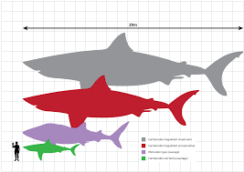
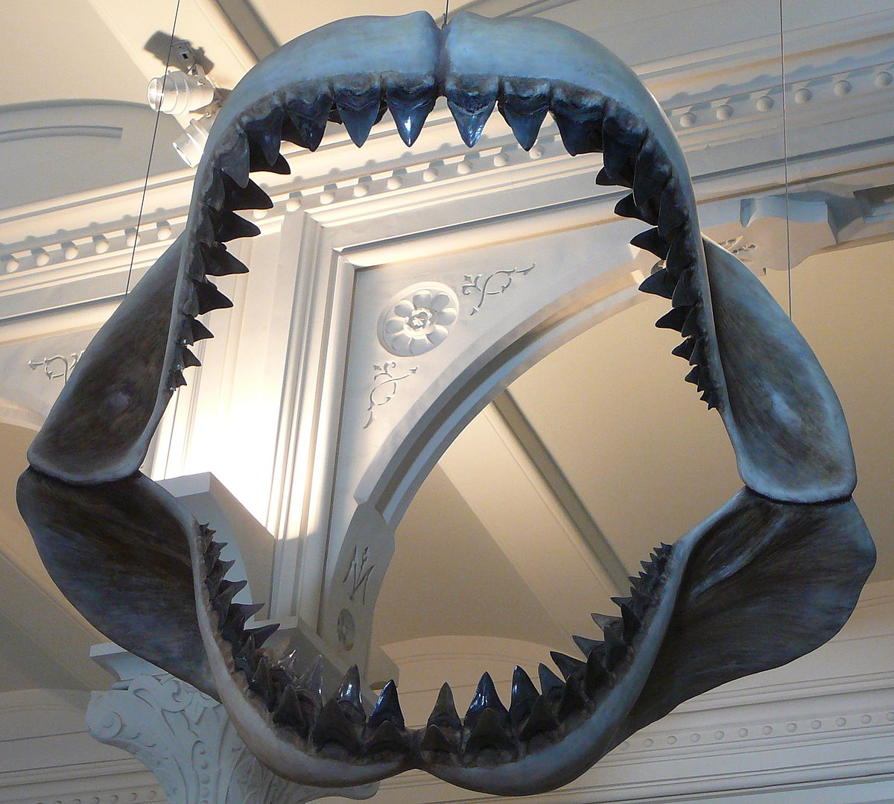

Principalmente após o lançamento de alguns filmes, o público se pergunta quais criaturas vivem no
fundo do mar. Já é declarado que conhecemos apenas 20% da vida de nossos oceanos, então, quais monstros
podem ainda viver a longos metros de nós?
Aliás, apesar de avanços feitos para mapear o fundo dos oceanos, ainda não é possível descartar a
possibilidade de que espécies que se acreditavam extintas possam estar vivas, habitando as profundezas dos
oceanos.


Megalodon (Otodus megalodon)
Estaria entre nós o maior tubarão com indicios de vida de aproximadamente 23 a 3,6 milhões de
anos atrás?
O animal, dado como extinto, teve grande fama após o lançamento do filme “Megalodon”, em 2018. O filme
retrata a história de tripulantes de um submarino, que tinham uma jornada pela fossa mais funda do
oceano, e acabam sendo atacados por uma criatura pré-histórica que acreditavam estar extinta: o
Megalodon.
Com isso, existem teorias que afirmam que o animal está vivo nas profundezas do oceano, alegando que com
o nosso conhecimento sobre ele, é impossível alegar com toda certeza que o animal ainda esteja extinto.